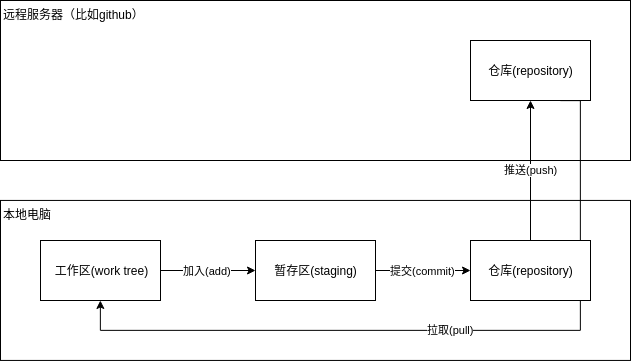
本文是“文科生学电脑”系列中的一篇文章，关注本专栏，感受一名艺术生眼中的计算机世界。
专栏索引：文科生学电脑系列 - 导读
20分钟快速从入门到入院
话不多说，撸袖子开干。
在git的世界中，我们有三个概念：
- 工作区：也就是我们真实存放文件的文件夹，我们修改的是文件夹里的文件，所以被称作工作区。
- 暂存区：一层中间层，存在这里的文件不会进入历史，往往我们不会在这一层做太多的工作。
- 仓库：这是git的核心部分，包含了“神圣的历史”，我们可以将其看做存档库，储存着一个个有价值的工作区的存档。
我们的工作流程也很简单：
- 在工作区做像平常一样写文字删除文件等等操作，这里跟git没有任何关系
- 将想提交的文件放入暂存区
- 写上提交信息，然后提交到仓库中。
以上这些内容足够让我们起步，我们现在可以从实战开始。不用单独的命令行，我们借助vscode来完成大部分的工作。
创建仓库
我们先创建一个项目文件夹：
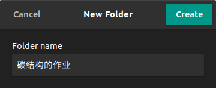
用vscode打开这一文件夹
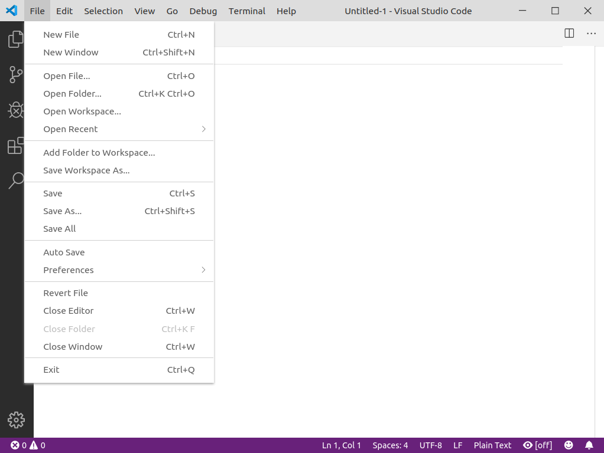
看到的应该是这样的画面
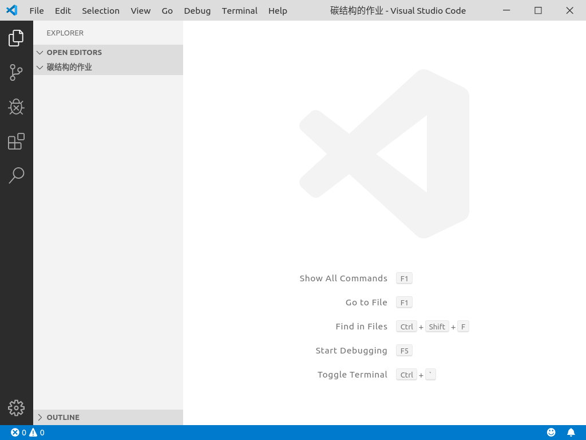
然后：
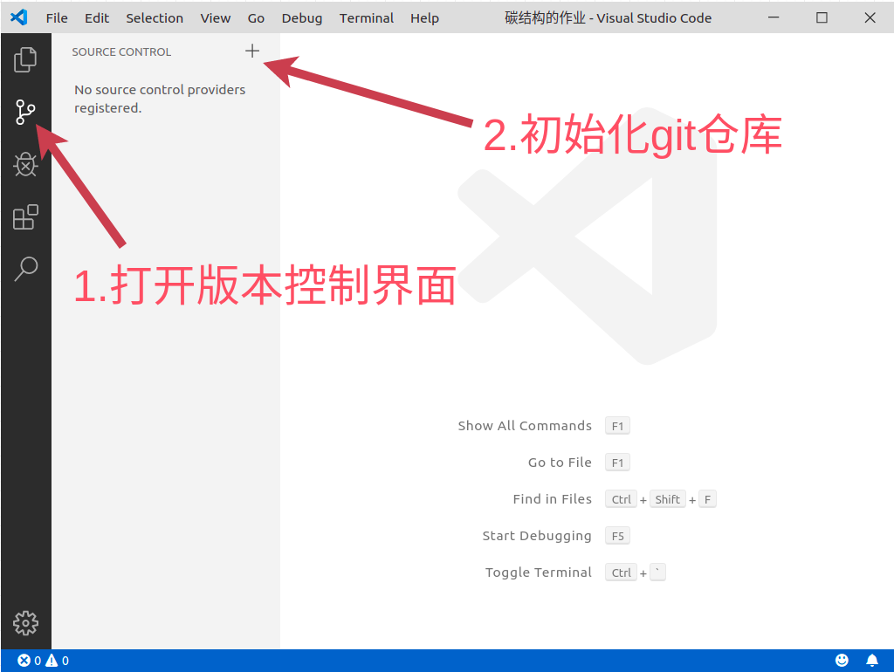
如果我们来看文件夹我们会发现我们多了一个.git隐藏目录，这就是git存放数据的仓库。
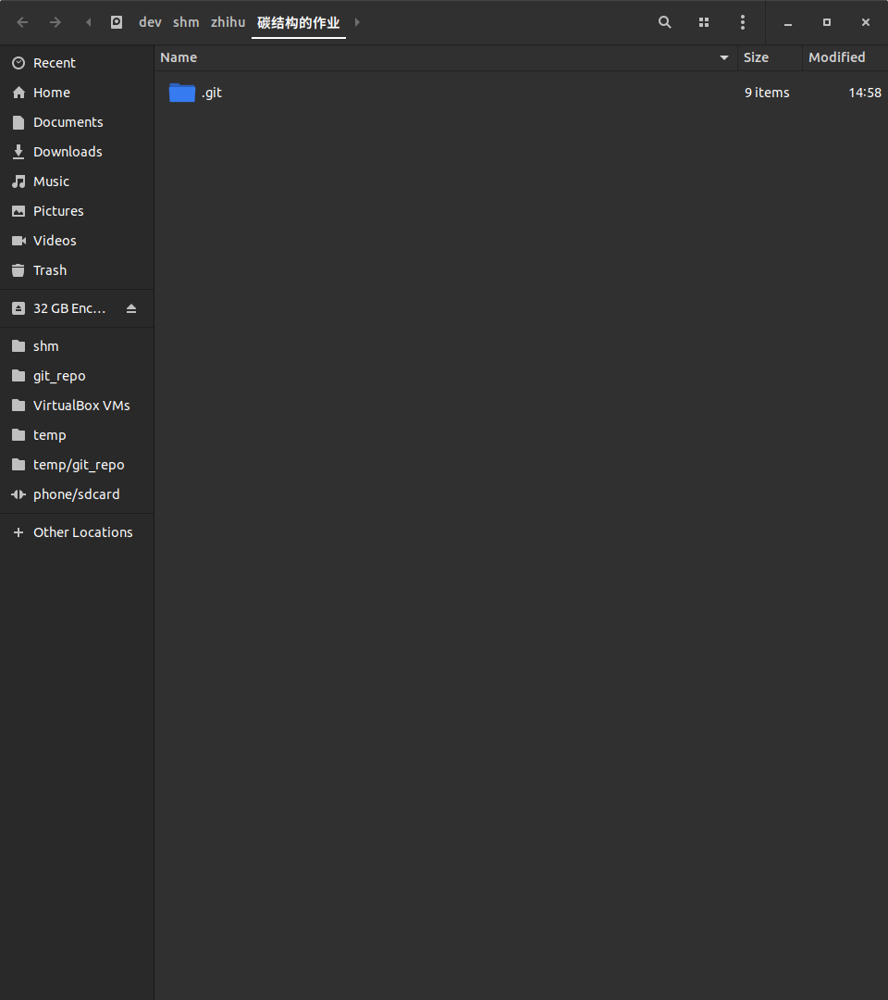
提交变动
我们试着开几个文件，开始工作。保存文件之后，我们发现git检测到了这些文件变动，并且给我们列了出来：
我们现在可以按左边的加号，将想提交的文件放入暂存区，然后就是这个样子：
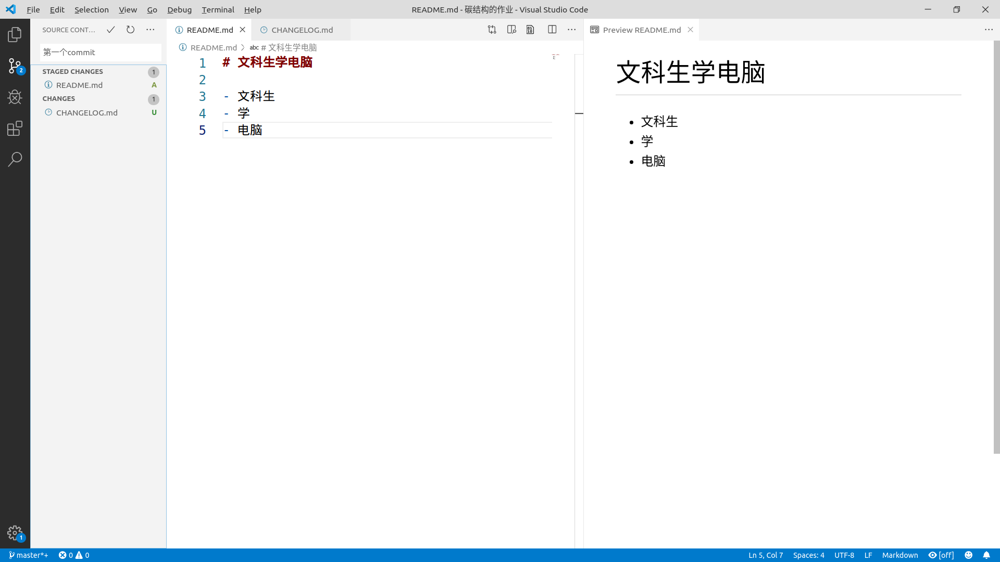
以下是一个图解，开头说的“工作区”，“暂存区”跟“仓库”这三个概念一目了然。
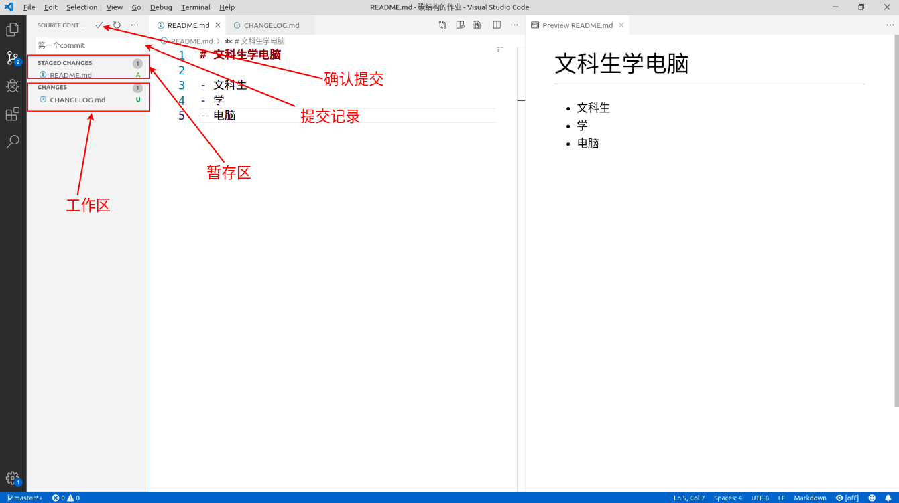
然后填入提交记录想说的话之后就可以确认提交。
提交完之后我们打开vscode自带的终端，可以通过git log查看提交日志：
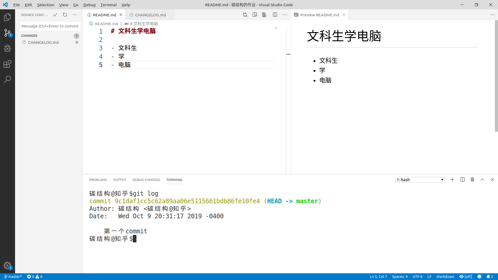
对比变化
版本控制加上纯文本最强大的特性就是对比变化。
假设我们继续写，做出改动。这时候如果我们在版本控制界面点击检测到的文件，我们就可以查看上个commit之后的改动：
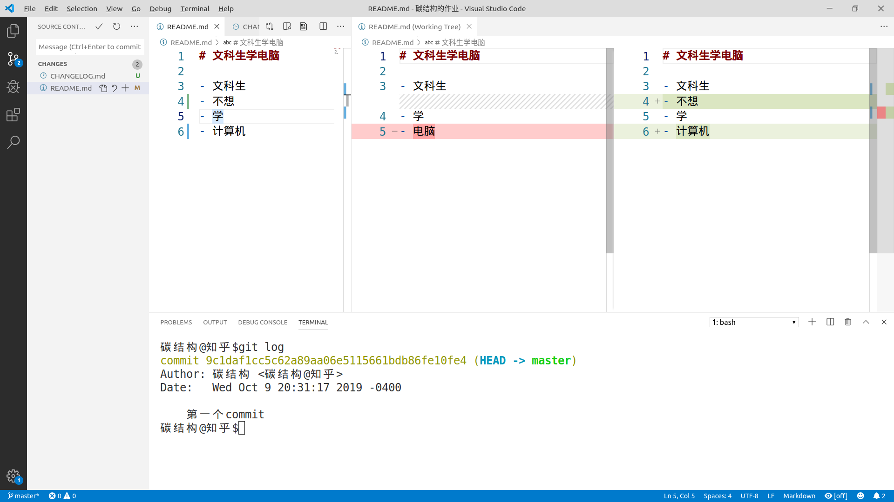
其中绿色代表新增的内容，红色代表删除的内容，所有改动一目了然。
仓库托管
git最大的好处就是易于备份，并且git备份有两个最大的好处：
- 可以确保所有备份的数据都完好无损（而网盘则很容易不靠谱：比如，如果要上传几百万个小文件，很有可能有几个文件就会莫名其妙丢失）。
- 增量备份。每次推送只用推送改动的那一部分，而不用推送整个仓库（而用网盘备份文本文件要不然就有上文因为小文件多导致的风险，要不然就要每次打包成压缩包，无法增量备份）。
我们可以把git仓库托管看做网盘，目前主流的git托管有以下几款：
- Github.com：全球最大的同性交友平台
- Coding.net：国内的git托管平台，速度专门为国内网络优化
- Gitlab.com：开源版的github
- Bitbucket.org：主要面向企业用户
以下内容wlog以Github做例子（这时候git的好处就体现出来了：所有git托管平台的操作都大同小异，而不像网盘，不同的平台有着不同的协议。所以，会用Github就会用任何git托管平台）。
首先注册账号，Github.com主页上直接无脑填信息就可以，跟其他任何网站一样。
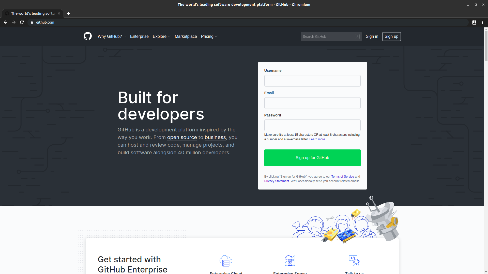
注册完登录，在右上角按那个加号，创建新的仓库。在git的世界里，repository特指仓库。
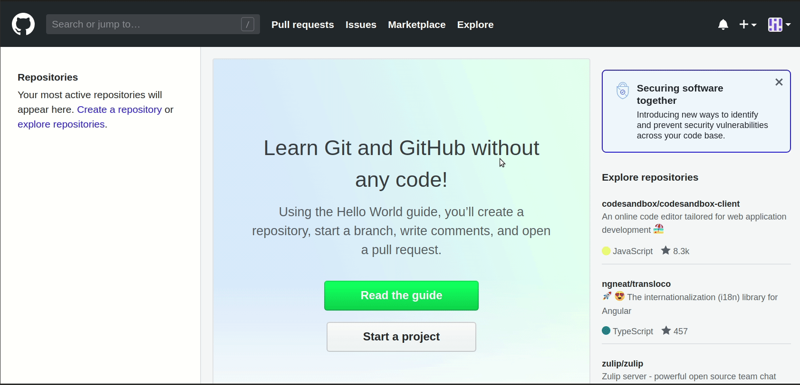
注意：创建的时候别忘了勾选“私密仓库”(private)，否则你上传的一切东西都会全网可见。
然后我们可以看到两个链接：
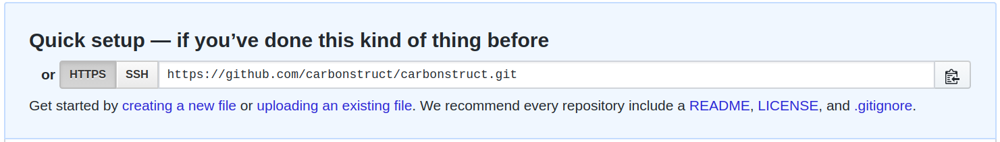
- https：每次推送都用登录github的密码来登录
- ssh：用私钥免密码登录
ssh的配置有点麻烦，而且windows系统下用ssh有点悲催，我们先用https登录来举例。
我们首先复制一下https链接，这就是我们仓库的网址(endpoint)。
然后回到vscode里面，配置git仓库。以下动图一图胜千言：
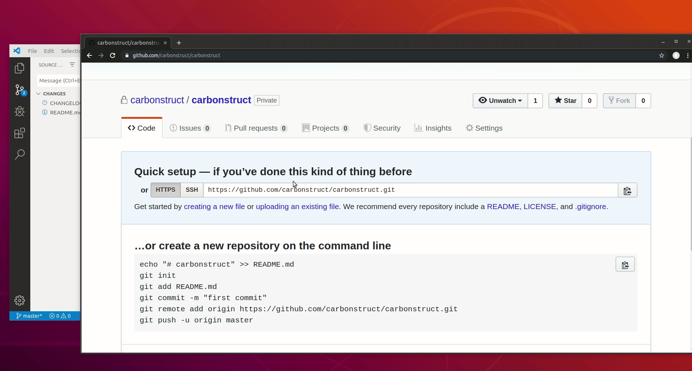
我们有可能会问，为什么远程仓库(remote)的名字会是origin，这只是约定俗成的一个默认值而已。在git的世界里，我们有两个默认的名字：
- 远程仓库默认名称：origin
- 分支默认名称：master
在配置好仓库之后，我们就可以将本地的版本推送到github。
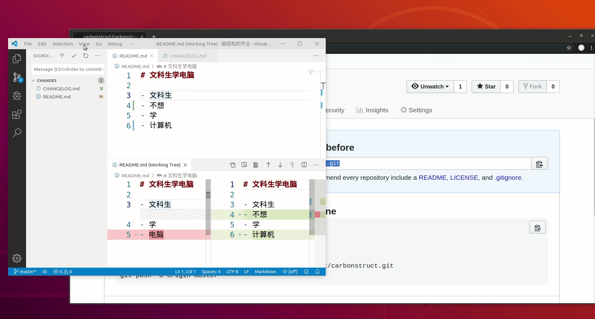